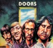

| |
|
|
The Doors: Backdoor Man - Seattle 1970
Broadcasting Radio Records CD / LP (December 2015)
There appears to be a new wave of vinyl record and CD
publishing companies
releasing material that hasn't found its way out via
artists' official sources.
Plural, because Broadcasting Radio Records are a busy
lot, putting out stuff by
a wide variety of artists. And in that, BRR isn't the
sole label these days so
there is quite a bit going on.
Seattle, June 5th 1970 wasn't a very good night for the
Doors. In fact it was a
pretty bad show, disastrous even when compared to some of
the outstanding
concerts they had produced earlier on that year. Yet this
doesn't stop bootleggers
and publishers of semi legal albums from revisiting the
concert - read: from
making easy money on it - time and time again. Not
surprisingly of course.
The legend and popularity of the Doors lives on, and with
each new generation
of fans comes the need for more than what Elektra and
Rhino have been and
are giving us.
This release though is by all means best avoided, and we
strongly recommend
an old bootleg CD of this show instead. At the time of
writing of course, it's
summer 2016 and hopes are high for this below the
standards Doors concert to
find a release that will surpass all existing
publications in both content and quality
of sound, because none of them have yet offered the
concert in its entirety. Both
'Light My Fire' and encore 'The End', abruptly terminated
before completion by
the venue management cutting off power, haven't surfaced
yet - I should add
that they are assumed to have never been recorded by at
the time road
manager, Vince Treanor; but you never know...
Perhaps the biggest issue about this release is the
absence of the song that
makes the concert an interesting one despite its flaws:
'Someday Soon'. A rare
one in the Doors catalogue, never tried for in the
studio, performed in concert a
handful of times only. It is a mere assumption rather
than a fact, but the reason for
this is quite obvious: the track has been published
officially by Elektra Records and
is therefore properly copyright protected; check your
copy of the 1997 'Box Set'.
Most probably a copy of 'Jim's Alive - The Ultimate
Seattle Tapes' (Tuff Bites, 1994),
this CD / double album could have made for a difference
twenty years after that
rare CD with its remarkable cartoon cover (a Tuff Bites
trademark, by the way) but
in that it has failed. "For completists only",
this would be the verdict of a long time
collector. "Good to have", in case owning or
acquiring a copy of the Tuff Bites disc
is not an option. But you will find yourselves listening
more often to 'Someday Soon'
which ironically isn't on the album than to the rest of
this show which wouldn't have
been a great loss had it not been recorded. But: it's
Doors history, people! And more
so than any other taped concert, Seattle 1970 reveals a
hard working quartet of
men - of humans, having an off day.
Here's the link to Rainer Moddemann's review of 'Jim's
Alive - The Ultimate Seattle
Tapes' on our website - scroll down the page, it's right
at the bottom:

� Kevin Chiotis for the Doors Quarterly Magazine Online - August 2016
|
|